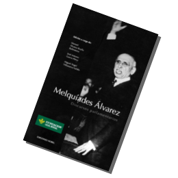

Melquíades Alvarez. Discursos parlamentarios
Libro:
Melquíades Alvarez. Discursos parlamentarios
Editorial Nobel, 2008. Distribuido por Edisofer.
Autores:
Manuel Alvarez-Buylla Ballesteros, José Antonio García Pérez y Miguel Ángel Villanueva Valdés
Categoría:
Historia política española, siglo XX.
Melquíades Alvarez (Gijón, 1864-1936) es considerado una de las más altas cimas de la oratoria parlamentaria de todos los tiempos. Por primera vez se editan íntegras sus intervenciones pronunciadas en el Congreso de los Diputados, recogidas taquigráficamente en los Diarios de Sesiones, desde sus dos primeras intervenciones en las Cortes de 1898, hasta su último discurso pronunciado en el hemiciclo del Congreso, ya en las postrimerías de las primeras Cortes ordinarias de la Segunda República, el 24 de octubre de 1935. Casi siete lustros de una intensa y brillante trayectoria parlamentaria en la que fundó el Partido Reformista (1912) y que culminó con la elección para la Presidencia del Congreso en las Cortes de 1923. Sus ideas y principios liberales preconizados hace más de un siglo se recogen hoy en nuestra Constitución de 1978, lo que hace que sus intervenciones sean un texto actual para conocer nuestra reciente historia política.
La presente edición está a cargo de su bisnieto Manuel Alvarez-Buylla Ballesteros, y de los investigadores José Antonio García Pérez y Miguel Angel Villanueva Valdés. Aparte de las intervenciones de D. Melquíades en el Congreso, se han incluido las contestaciones de otros oradores y las rectificaciones pronunciadas por el tribuno asturiano, lo que posibilita un análisis completo del debate político de gran utilidad para los investigadores. Se ilustra la obra con fotografías inéditas y caricaturas de la época.
22.04.2009 Presentación en el Congreso de los Diputados